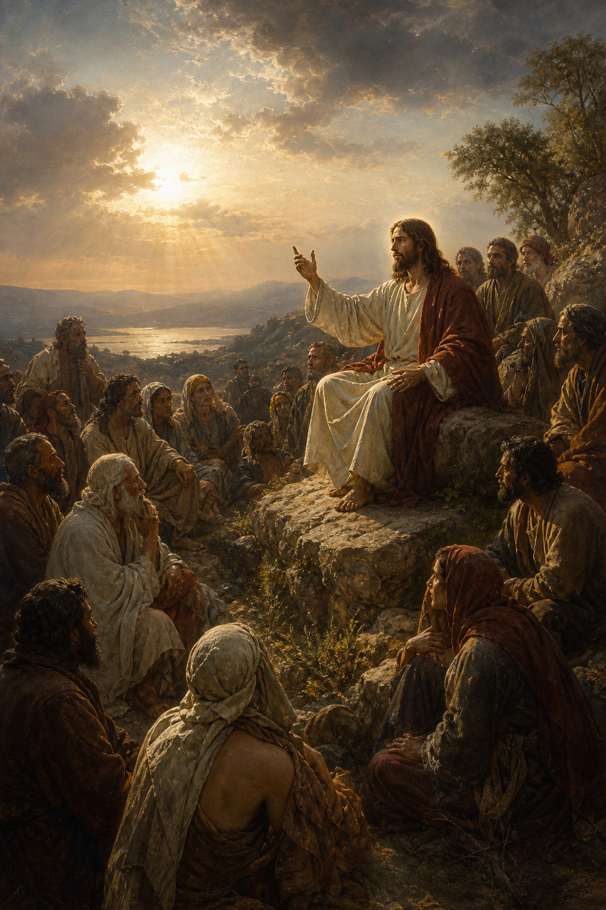

New Testament · Book 1 of 27
Matthew
Written for a Jewish audience, this Gospel opens with a royal genealogy and closes with a universal commission, presenting Jesus as the long-promised King who fulfills the Law and the Prophets.
Matthew, a former tax collector turned disciple, writes to show that Jesus of Nazareth is the Messiah promised throughout the Hebrew Scriptures, tracing his lineage from Abraham through David and weaving in dozens of Old Testament fulfillments along the way.
Go ye therefore, and teach all nations, baptizing them in the name of the Father, and of the Son, and of the Holy Ghost.
What happens in Matthew
Matthew begins with the genealogy and birth of Jesus, the visit of the wise men, and the family's flight into Egypt to escape Herod's massacre of the innocents. After John the Baptist prepares the way and Jesus is baptized and tempted in the wilderness, his public ministry begins in Galilee, calling fishermen as disciples and delivering the Sermon on the Mount, the fullest statement of kingdom ethics in Scripture, covering the Beatitudes, the Lord's Prayer, and a call to a righteousness that exceeds mere rule-keeping. Across the middle chapters, Jesus heals the sick, casts out demons, calms storms, and teaches in parables about the kingdom of heaven, likening it to seeds, pearls, and hidden treasure, while opposition from the religious leaders steadily mounts. He feeds thousands, walks on water, is transfigured before three disciples in dazzling glory, and repeatedly warns his followers of the suffering awaiting him in Jerusalem. The final chapters turn toward the cross: a triumphal entry, clashes with the Pharisees and Sadducees, the Olivet Discourse on the end times, the Last Supper and Gethsemane, betrayal by Judas, trial, crucifixion, and burial. The Gospel ends in triumph, the empty tomb, the risen Christ appearing to his disciples, and the Great Commission sending them to make disciples of all nations, with the promise that he will be with them always, even to the end of the age.
Why it matters
Placed first in the New Testament canon, Matthew serves as the hinge between the Old and New Testaments, constantly showing how Jesus fulfills ancient prophecy while inaugurating something genuinely new. Its Sermon on the Mount has shaped Christian ethics for two millennia, and its closing commission has sent missionaries to every continent in obedience to its final command.
Jump to a chapter
Matthew has 28 chapters — select one to begin reading there.